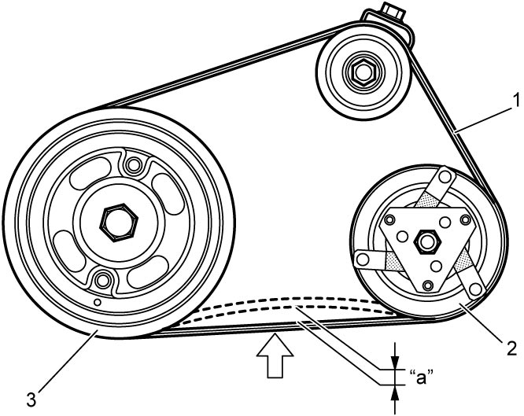
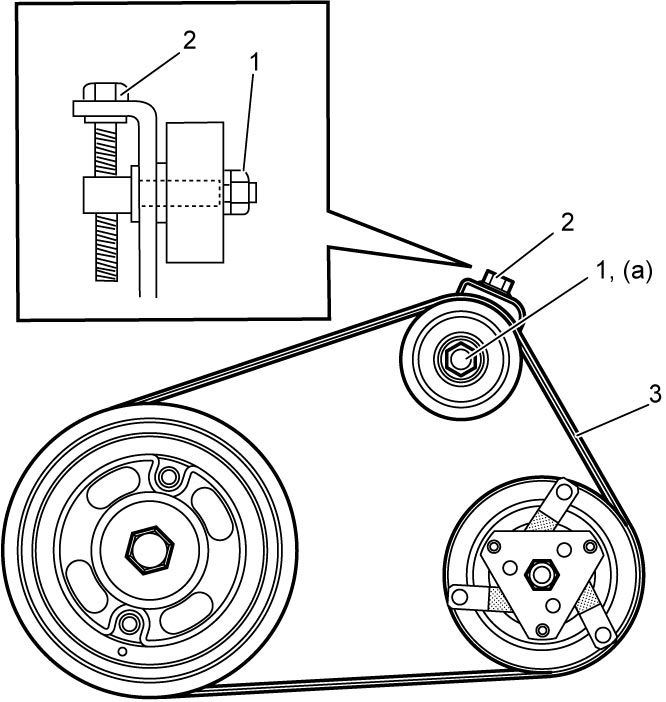

7B
| Compressor Drive Belt Inspection and Adjustment |
Petrol Model
Inspection
•Check compressor drive belt (1) for wear, crack, deformation and contamination. If any defect is found, replace the belt with new one. 
•Check compressor drive belt tension by measuring how much it deflects when pushed at intermediate point between magnetic clutch pulley (2) and crankshaft pulley (3) with about 100 N (10 kg) force after rotating crankshaft pulley 360°. If belt tension is not as specified, adjust belt tension referring to Adjustment.

•Check compressor drive belt tension by measuring how much it deflects when pushed at intermediate point between magnetic clutch pulley (2) and crankshaft pulley (3) with about 100 N (10 kg) force after rotating crankshaft pulley 360°. If belt tension is not as specified, adjust belt tension referring to Adjustment.
Compressor drive belt tension
“a”
:
9 – 10 mm (0.35 – 0.39 in.) / 100 N (10 kgf or 22 lb)
NOTE:
When replacing drive belt, adjust drive belt tension to the following specifications.
New compressor drive belt tension
“a”
:
7 – 8 mm (0.28 – 0.31 in.) / 100 N (10 kgf or 22 lb)

 "Expand image")
Adjustment
1)Loosen tension pulley nut (1).
2)Adjust belt tension by tightening or loosening tension pulley adjusting bolt (2).
3)Tighten tension pulley nut to specified torque.
4)Rotate the crankshaft pulley 360°, and then recheck compressor drive belt (3) for tension.

 "Expand image")
Diesel Model
For inspection and adjustment, refer to Generator Drive Belt Tension Inspection:D16AA.